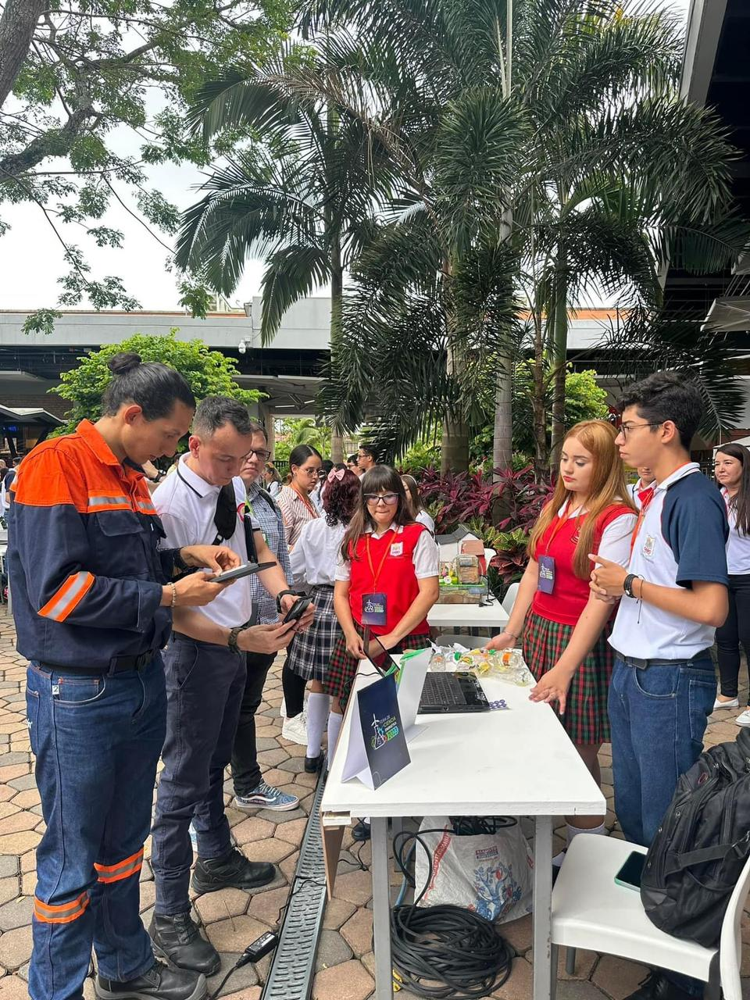

Wall-Recycle es un artefacto inspirado en la película WALL-E, este se encarga de separar los residuos en tres clasificaciones distintas (Aprovechables, No aprovechables, Orgánicos), cabe aclarar que es un proceso que el realiza solo, en donde brinda información de forma oral ya que el menciona en donde va a depositar el desecho. Por otro lado, con este artefacto buscamos abarcar el subtema de Sostenibilidad ambiental, ya que con este proyecto queremos hacer más efectiva la preservación de estos residuos con el fin de reutilizarlos y así brindar un impacto positivo al medio ambiente por la disminución de la contaminación. Y las ODS que se pueden encontrar en nuestro proyecto son, Agua limpia y Saneamiento, Industria, Innovación e Infraestructura, Ciudades y Comunidades Sostenibles y Vida de Ecosistemas Terrestres. Y con esta información podemos decir que Wall-Recycle es un artefacto que concientiza y vuelve didáctico el proceso de desechar un residuo.
La idea de Wall-Recycle fue un planteamiento primerizo verdaderamente, esta idea fue la primera que nos surgió con base a la problemática que buscamos abarcar,ya que se nos vino a la mente la acción cotidiana de desinterés, desinformación o falta de tiempo al tener en cuenta los saberes del reciclaje como tal.

Iniciamos con la idea del proyecto desde el año 2023, al estar inscritos en el semillero de robótica nos enteramos rápidamente sobre la psoibilidad de participar en la Feria de la Ciencia patrocinada por la entidad de las Energías de Pereira, por ende al mostrarnos interesados en participar este proyecto pudo ser presentado por nosotros ese mismo año, en donde lo presentamos como un prototipo esquematizado, actualmente, queremos presentarlo con un artefacto ya bien formado, con una programación bastante acertada y una página web más desarrollada. En el presente, planeamos volver a presentarnos en la Feria y esperamos obtener los mejores resultados.